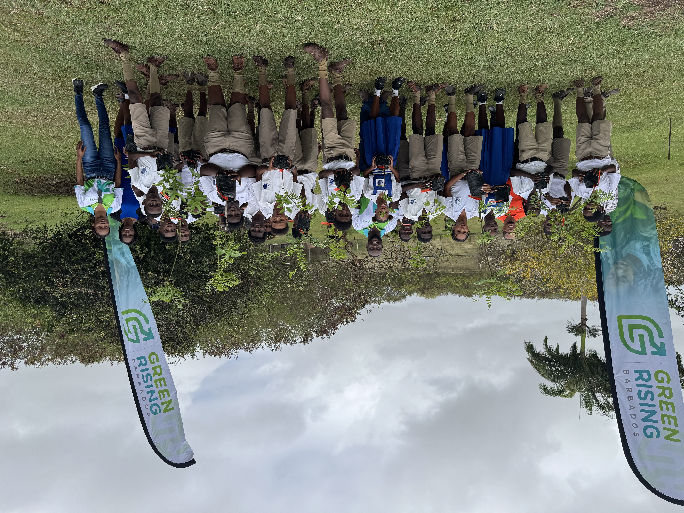

Empowering Youth to Lead Barbados’s Green & Blue Future
Connecting young leaders with skills, sustainable employment, marine engineering, and community resilience projects across Barbados.
Our Five Core Action Pillars
Discover how Green Rising Barbados transforms climate passion into accredited training and jobs.
Water Conservation
Addressing island water scarcity through household auditing, rainwater harvesting, and smart leak detection.
Explore Initiative →CYEN Skills Development
Practical training modules in environmental stewardship, renewable energy, and community project leadership.
Explore Initiative →Eco Village: Earn & Grow
Six zonal pathways bridging sustainable agriculture, hydroponics, and green enterprise micro-grants.
Explore Initiative →Youth of the Seas (YOTS)
12-week Cohort training in resilient wooden/composite boatbuilding, vessel repair, and maritime skills.
Explore Initiative →Pinelands Workshops
Orange Economy & TechA 6-zone dynamic career pavilion spanning creative industries, digital media, entrepreneurship, and performance careers.
Explore Creative & Tech Pavilion →Meet the Leadership & Mentors
The dedicated team driving Barbados's youth-led climate engine and blue-green transition.
Spearheading Future Barbados & Green Rising strategic vision, youth empowerment frameworks, and inter-ministerial climate partnerships.
Overseeing cohort intakes, YOTS boatbuilding logistics, and community field execution across parishes in Barbados.
Guiding hydro-conservation science, rainwater harvest monitoring, and island coastal restoration initiatives.
Comprehensive Action Pillars
Select any pillar below to explore curriculum details, impact calculators, and cohort schedules.
Water Conservation & Climate Resilience
Protecting Barbados’s freshwater supplies through youth-led household audits and rain harvesting.
Barbados is ranked among the top 15 most water-scarce countries globally. This initiative mobilizes youth to install low-flow aerators, perform leak detection audits, and set up rain harvesting barrels.
- Community water auditing certification
- Rainwater harvesting barrel distribution
- School rainwater monitoring systems
Did You Know?
Fixing a single leaking toilet flapper saves over 200 gallons of water daily in a Barbadian household!
Household Water Savings Calculator
Calculate how much water your household can save with simple upgrades.
CYEN Environmental Skills Development
In partnership with the Caribbean Youth Environment Network (CYEN).
Equipping Barbadian youth with practical environmental management skills, carbon footprint tracking, and advocacy tools needed for green sector careers.
Solar & Renewable Basics
Introductory photovoltaics and energy auditing for homes.
Waste Stream Upcycling
Turning plastics and glass into commercial products.
Coastal Dune Ecology
Re-vegetation and mangrove protection skills.
Green Project Mgmt
Grant writing, budgeting, and sustainability metrics.
Curriculum FAQs
Barbadian youth aged 15-29 interested in green jobs, environmental science, or community action.
Yes! Participants receive an accredited Certificate of Completion endorsed by Future Barbados and CYEN.
Modules run over 6 weeks with weekend hands-on workshops and field trips.
"CYEN training gave me the exact skills I needed to land a job as a junior environmental officer."
Eco Village: Earn & Grow Zonal Pathways
A sustainable agricultural blueprint combining food security, micro-enterprises, and renewable energy.
Zone 1: Climate-Smart Hydroponics
Vertical farming systems designed for high-yield produce using 90% less water than traditional soil farming.
- Nutrient film technique (NFT) setup
- Solar-powered water circulation pumps
- Year-round lettuce and herb production
Zone 2: Youth Agri-Business Incubator
Helping young entrepreneurs launch food micro-enterprises with seed funding and branding assistance.
- Packaging and food safety standards
- Direct-to-hotel supply agreements
Zone 3: Off-Grid Solar Microgrid
Providing clean electricity to power community irrigation pumps and cold storage refrigeration.
Zone 4: Organic Waste Composting
Converting hotel organic waste into nutrient-dense compost for local soil enrichment.
Zone 5: Indigenous Seed Sanctuary
Preserving drought-resistant local plant varieties to ensure long-term crop resilience.
Zone 6: Youth Farmers Market
Weekly pop-up market allowing youth growers to sell produce directly to consumers.
Youth of the Seas (YOTS) Boat Building
A 12-week intensive maritime apprenticeship building disaster-resilient sea vessels.
In response to increasing climate storms and marine transport needs, YOTS trains youth in traditional boat construction, composite materials, marine mechanics, and navigation safety.
12-Week Roadmap
-
01Weeks 1-3: Marine Carpentry & Lofting
Tool safety, blueprint reading, hull geometry, and timber selection.
-
02Weeks 4-7: Hull Framing & Fiberglassing
Building rib frameworks, planking, epoxy resin application, and fiberglass reinforcement.
-
03Weeks 8-10: Engine Mechanics & Electronics
Outboard motor maintenance, marine wiring, bilge pumps, and navigation lights.
-
04Weeks 11-12: Sea Trials & Launching
Safety certification, flotation testing, sea trial navigation, and graduation.
Next Cohort Intake
Cohort 5 Enrollment
Duration: September 15 - December 10
Location: Bridgetown Maritime Center
Stipend: Weekly training stipend provided
Participant Prerequisites
- Ages 18-29 (Barbadian Citizenship or Residency)
- Interest in maritime trades, carpentry, or mechanics
- No prior experience required; full training provided
Pinelands Pavilion: 6-Zone Creative Workshops
Discover your future career path across six high-growth creative and green economy pavilions.
The Pinelands Pavilion provides hands-on exploration booths, career counseling, digital media labs, and mentorship for young Barbadians.
Green Enterprise
Solar installation, eco-tourism, and circular economy startups.
Emerging Markets
Hydroponics, sustainable culinary arts, and wellness products.
Build the Future
Resilient carpentry, boat building, and green architecture.
Tech & Digital
App development, digital media, coding, and remote work.
Global Studies
Climate policy, diplomacy, and international scholarships.
Sports & Performance
Coastal sports, diving leadership, and athletic training.
Interactive Career Discovery Wizard
Answer 2 quick questions to find your recommended Pinelands Pavilion zone.
Green Rising Impact Dashboard
Real-time tracking of youth training, water conservation, boat construction, and climate job creation.
2026 Climate Youth Goal
We are currently on track to train 300 Barbadian youth in green-blue sectors by Q4 2026.
Across 5 Barbadian Parishes
Gallons/Month Saved
Disaster-Resilient Boats
Full-Time Appointments
Field Activity Log
Cohort 4 completed fibreglass hull coating on vessel 'Rising Tide II' at Bridgetown Maritime Center.
CYEN youth installed 140 tap aerators across 45 residential homes in Pinelands.
First harvest yielded 350 lbs of organic lettuce delivered to local hospitality vendors.
Live Impact Data Simulator
Simulate real-time admin metrics updates to test dashboard reactivity.
Find Your Green Rising Pathway
Take this 30-second quiz to discover which initiative matches your goals.
What is your current age bracket?
Apply for Green Rising Programmes
Take the first step toward accredited climate training and green employment in Barbados.
Meet the Leadership & Mentors
The dedicated team driving Barbados's youth-led climate engine and blue-green transition.
Spearheading national youth climate strategy and Future Barbados inter-ministry partnerships.
Overseeing cohort intakes, YOTS boatbuilding logistics, and community field execution across parishes in Barbados.
Guiding hydro-conservation science, rainwater harvest monitoring, and island coastal restoration initiatives.
Connecting parish youth groups, organizing school outreach drives, and managing community volunteer programs.
Managing sustainable agri-business incubators, vertical hydroponic systems, and local farmer market partnerships.
Directing hands-on disaster-resilient boat construction, timber framing, and fiberglass engineering modules.